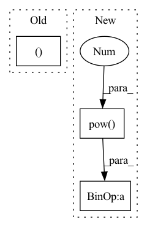

Pattern ID :194

Before Change
c_t = torch.bmm(alpha_t.unsqueeze(1), inputs).squeeze(1)
self.mu_tm1 = mu_t
return c_t, mu_t, alpha_t
class Attention(nn.Module):
// Pylint gets confused by PyTorch conventions here
After Change
// g_t = torch.softmax(g_t, dim=-1) + self.epsilon // distribution weight
// sig_t = torch.exp(b_t) + self.epsilon // variance
// mu_t = self.mu_prev + self.attention_alignment * torch.exp(k_t) // mean
sig_t = torch.pow(torch.nn.functional.softplus(b_t), 2)
mu_t = self.mu_prev + torch.nn.functional.softplus(k_t)
g_t = (torch.softmax(g_t, dim=-1) / sig_t) * self.COEF
g_t = g_t.unsqueeze(2).expand(g_t.size(0),
g_t.size(1),
In pattern: SUPERPATTERN
Frequency: 3
Non-data size: 3
Instances
Fragment ID: 817165
Project Name: coqui-ai/tts
Commit Name: adf9ebd629abc21e0969db2a1c29f389b5301c9d
Time: 2019-11-12
Author: egolge@mozilla.com
File Name: layers/common_layers.py
M Class Name: GravesAttention
N Class Name: GravesAttention
M Method Name: forward(4)
N Method Name: forward(4)
M Parent Class: nn.Module
N Parent Class: nn.Module
M File Name: layers/common_layers.py
N File Name: layers/common_layers.py
M Start Line: 141
M End Line: 169
N Start Line: 149
N End Line: 180
'>
Before Change
action = action.tanh()
return action, std
if __name__ == "__main__":
use_cuda = torch.cuda.is_available()
After Change
action = action_base.tanh()
// According to "Soft Actor-Critic" (Haarnoja et. al) Appendix C
action_bound_compensation = torch.log(1. - action.tanh().pow(2) + 1e-6)
action_bound_compensation = action_bound_compensation.sum(dim=-1, keepdim=True)
log_prob.sub_(action_bound_compensation)
'>
Fragment ID: 817176
Project Name: tmdt-buw/karolos
Commit Name: e8ce439013ace3e3e9647de55ed22ddf38f35396
Time: 2020-04-23
Author: scheiderer@uni-wuppertal.de
File Name: agents/nnfactory/sac.py
M Class Name: Policy
N Class Name: Policy
M Method Name: forward(3)
N Method Name: forward(3)
M Parent Class: nn.Module
N Parent Class: nn.Module
M File Name: agents/nnfactory/sac.py
N File Name: agents/nnfactory/sac.py
M Start Line: 103
M End Line: 115
N Start Line: 104
N End Line: 123
'>
Before Change
stride=self.stride, padding=self.padding, groups=B
)
_, _, H, W = out.size()
out = out.view(B, -1, H, W)
return out
After Change
// demodulate
if self.demod:
d = torch.rsqrt(weight.pow(2).sum([2, 3, 4], keepdim=True) + 1e-4)
weight = weight * d
// reshaping for conv input
x = x.reshape(1, -1, H, W)
_, _, *ws = weight.size()
weight = weight.reshape(B*self.out_channels, *ws)
pad = self._get_same_padding(H)
// conv
x = F.conv2d(x, weight, padding=pad, groups=B)
// return with bias
return x.reshape(B, self.out_channels, H, W) + self.bias
def _get_same_padding(self, size):
return ((size - 1) * (self.stride - 1) + (self.kernel_size - 1)) // 2
'>
Fragment ID: 817174
Project Name: stomoya/animeface
Commit Name: b3652bae109c713da926d5532eb014b02135da52
Time: 2020-12-14
Author: blackie0110@gmail.com
File Name: implementations/StyleGAN2/model.py
M Class Name: EqualizedModulatedConv2d
N Class Name: ModulatedConv2d
M Method Name: forward(3)
N Method Name: forward(3)
M Parent Class: nn.Module
N Parent Class: nn.Module
M File Name: implementations/StyleGAN2/model.py
N File Name: implementations/StyleGAN2/model.py
M Start Line: 71
M End Line: 87
N Start Line: 109
N End Line: 131